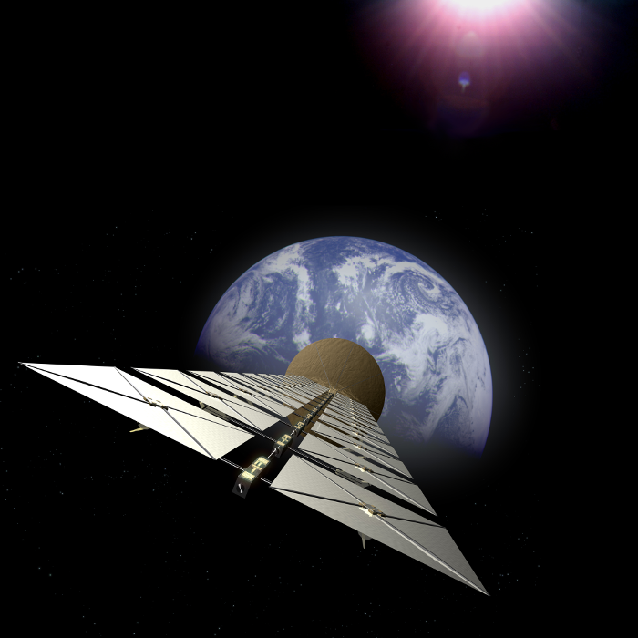
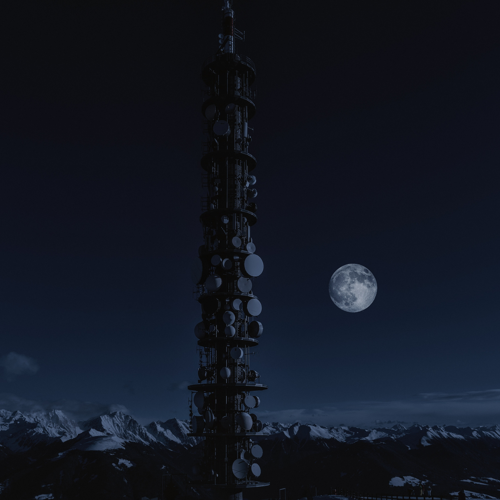

Simply put! It is the process of generating power in space and then beaming it back to Earth.
This concept was introduced in the 1950s, at which point it was considered an impractical idea worth nothing. It was a crazy concept then, it is a crazy concept today!
But in the recent years has gotten a lot of traction, and due to recent improvements in technology, has become more feasible. Which is what we will be seeing in this presentation!
(Note that this doesn't refer to power generation methods aboard spaceships.)
But Why?
It's an easy question to ask, since we already have all the power we need.
But that power is hazardous and inefficient. And the demand for energy is always increasing!
Let's get to know why Space based power is necessary?!
Increased Demand For Power
The world has been becoming increasingly power hungry in the previous decade, and the population is on the rise (Expected to double by 2075).
This causes challenges such as power demand surge, and due to increased resource constraint, it is becoming harder and harder for everyone to do something worthwhile about it.
In such times, it is only a matter of time before we start looking up, quite literally, at space.
1 Hour
That's all it takes for enough sunlight to reach the Earth to power it for an YEAR!
The Upside!
The first thing that is used to support a crazy idea is the upside it can provide to everyone. And trust me when I say, this concept has more upsides than it has downsides.
A lot of its benefits are shared with Solar Power in general.
A list of upsides of this concept are :
No greenhouse emissions and no hazardous byproducts! (Always Up For that.)
No depletion of fresh water (Which coal does all the time!).
Extremely high throughput (45%) post installation.
Cheapest source of energy post installation.
Not limited by Earthly factors such as Rain. So it's available 24x7!
The Sun just never sets on this. (Poor chap it misses out on such great scenes!)
Let's Get Into Workings! Shall we.
This is an Electronics Presentation after all!
Components

Solar Power Satellites

Microwave Power Transmitter
PhotoVoltaic Arrays
Rectenna (Rectifying Ant.)
Terminology
Let's see what these components actually mean, and what they do!
Solar Power Sattelites : These are just satellites that house solar panels (Photovoltaic Cells) / photovoltaic arrays for capturing solar power. These orbit the Earth geostationarily at around 22000 KM.
Microwave Power Transmitter : It is the electronic instrument responsible for converting the captured sunlight to beams and then transmitting it.
PhotoVoltaic Arrays : These are arrays upon arrays (Over a 100 layers) of photovoltaic cells to capture sunlight.
Rectenna : It stands for Rectifying Antenna, and is an on-ground atenna that converts the received microwave beams back into energy.
Overview Of the Procedure
Then What's Stopping Us?
It's the same about everything else that's good in the world, Money!
Logistics!
The biggest challenge yet to the whole concept, is logistics! The challenge of getting something to space is a big deal. Considering the amount of fuel and power that's required. Given that over a million tons of pre-built material will have to be launched into space!
Money
Then comes the perenial problem, money, the estimated cost of the whole operation is $1 Trillion! It's not even a comparison to the cost of coal and tidal production combined, but the short term investment
looms everyone off from the concept.
Conclusion
So, in conclusion, solar based space power was a crazy idea when it was proposed. It is still a crazy idea today, the only thing different about today is that we are making continuous improvements in the field in order to achieve this goal.
We looked at how this concept works and how this can be a viable option for the world's power generation once it becomes feasible enough.
Till then, it is just a prospect to be unravelled. And it might one day be an option for the world as we move to an eco-friendly and environmentally aware world.